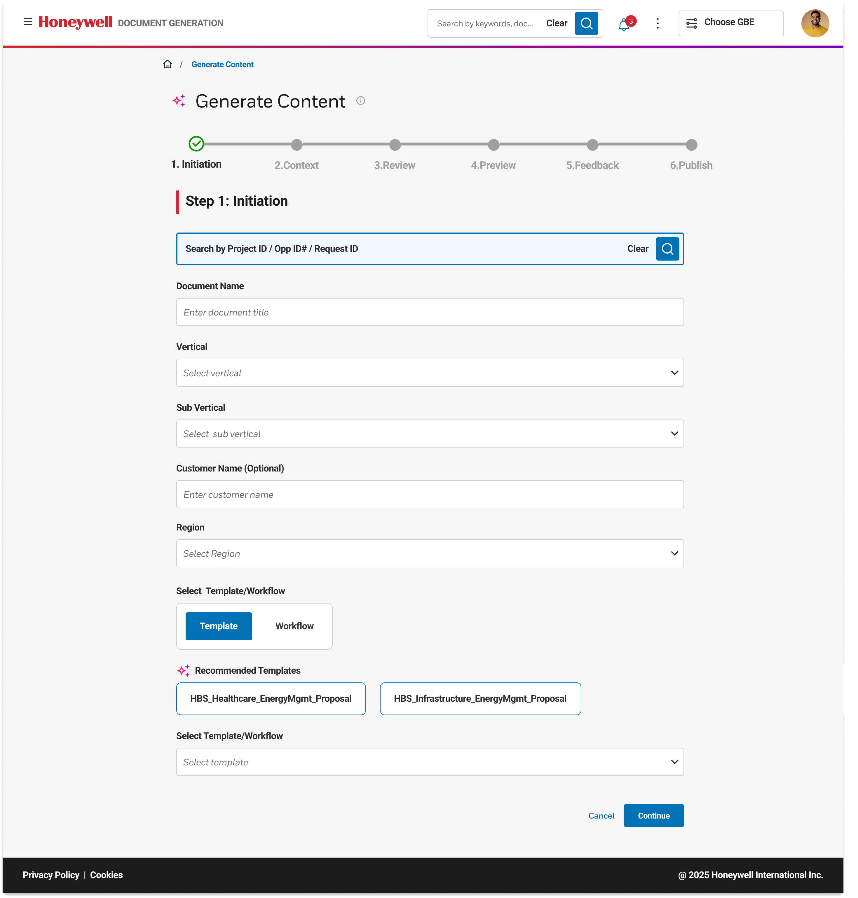

01 · Find
Where do you look first?
“I usually check several places before I can begin.”
AI document intelligence
Proposal teams often knew the right information existed somewhere. Finding it, checking it, and turning it into a useful response was the hard part.
I designed an AI-assisted workflow that reduced repetitive information work while keeping evidence, judgment, and final approval with people.
Role
Product Designer
Duration
6 weeks
Team
Product · AI · Engineering
Focus
AI workflow UX
Before
After
The challenge
A new request could mean searching old proposals, checking internal knowledge, consulting experts, and comparing information across systems.
The question was not “How can AI write faster?”
It was how AI could help people reach a reliable starting point without hiding the evidence behind it.
Existing workflow
Design opportunity
AI could bring useful information together and prepare a working draft. People would still apply context, validate accuracy, and make the final decision.
I mapped how people found information, checked details, and built confidence before creating a response. The goal was to understand where effort accumulated and where AI could genuinely help.
Participants
Participant profile
Document creators · Analysts · Reviewers
Research activities
Interviews · Workflow walkthroughs · Concept evaluation
What we explored
Find · Understand · Verify · Draft
Research room
01 · Find
“I usually check several places before I can begin.”
02 · Friction
“Finding information and bringing it together takes time.”
03 · Hesitation
“I need to know whether the information is current and correct.”
04 · AI role
“It can summarise information and prepare a first draft.”
05 · Review
“I still need to check details and identify what is missing.”
06 · Approval
“Only after I have reviewed the response myself.”
Key insight
Evidence → decision → interface
Research did not simply confirm the problem. It changed what the workflow needed to make visible, controllable, and reviewable.
Observed
6 of 8 participants started by searching at least three locations before they could begin.
Insight
Users often did not know which source was current, relevant, or safe to reuse.
Design decision
Users review the knowledge selected for generation before AI creates a draft.
UI change
Added source selection and a visible Knowledge used panel beside the draft.
Validation
Participants could explain why a source was included and identify missing context before reviewing the generated response.
What changed
The solution moved from “AI finds the answer” to “people can see, shape, and review the knowledge behind the answer.”
AI opportunity
The opportunity was to redesign the slowest part of the workflow: turning scattered knowledge into a useful starting point that people could inspect, improve, and approve.
AI prepares
Search approved knowledge, connect relevant information, summarise long content, prepare a draft, and flag missing evidence.
People evaluate
Apply customer knowledge, assess relevance, validate accuracy, improve the response, and resolve uncertainty.
People approve
AI cannot own business judgment, accept accountability, or approve a final response. Those responsibilities remain human.
Why not Chat: Users needed to add context, review evidence, and approve the final response. A guided workflow made each stage clear and easier to manage.
We considered
We chose
A single prompt was faster, but it reduced control over source selection, customer context, and review. The guided workflow collected critical information before generation.
Design Journey - Generate content to Review
I replaced an open-ended AI interaction with a guided workflow. Each step gives the system better context while keeping the user informed and in control.

Start with a clear brief.
Users define the request, audience, requirements, and business context before AI begins working.
So the workflow kept the information behind the response visible, editable, and easy to review.

01
AI provides a starting point—not a finished answer.
02
Users can see what information shaped the response.
03
The final decision stays with the person responsible.
The goal was not to make AI seem certain. It was to make its output easier to understand, question, and improve.
Outcome
The workflow helped teams begin with a stronger, evidence-backed draft while keeping review and accountability visible.
Workflow
Relevant information appeared earlier.
Knowledge
Useful company knowledge became easier to reuse.
Trust
People could inspect, improve, and approve AI output with confidence.
Find faster. Understand better. Keep people responsible for the final decision.
Reflection
It was deciding where AI should help, where it needed to remain transparent, and where people had to stay responsible.
This project reinforced that useful enterprise AI is not a chat interface placed on top of an existing workflow. It requires redesigning how information is found, how uncertainty is communicated, and how people stay in control.
The strongest AI experience did not remove people from the workflow. It helped them spend less time searching and more time applying their expertise.
Next project